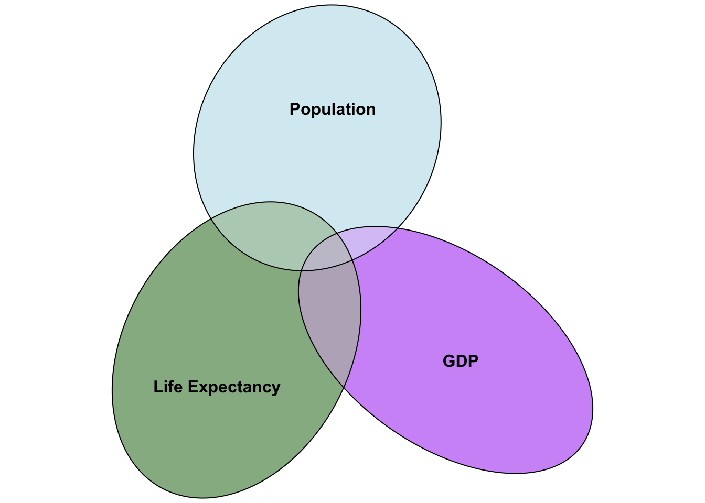
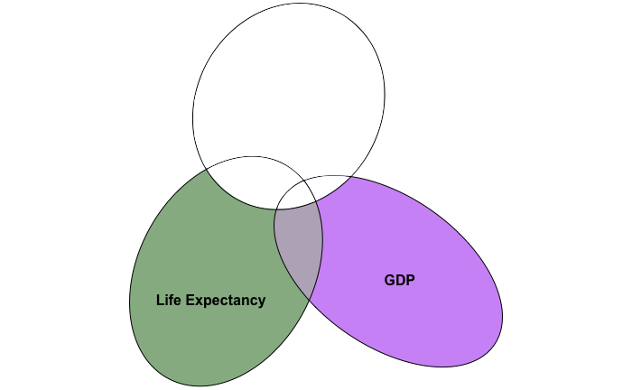
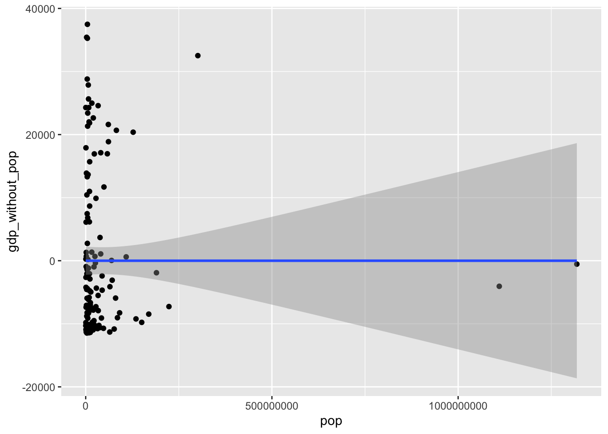

Multiple Regressions (R)
Red means that the page does not exist yet
Orange means that the page is started
Creating a model to predict your outcome
Multiple regressions build on the principles of simple regression, but allows you to investigate multiple predictors. Importantly, it allows you to control for overlap between the predictors on the outcome variables, and thus identify how much variance each predictor individually explains. To illustrate the principles of multiple regression we’ll use the gapminder data from 2007, to look at predictors of life expectancy.
# to make numbers more readable we are turning off e-numbers
options(scipen = 999)
# load gapminder data
library(gapminder)
gapminder_2007 <- subset(
gapminder,
year==2007
)
rmarkdown::paged_table(gapminder_2007)Let’s investigate if life expectancy is well predicted by population and gdp of a country. The challenge is that if you do 2 simple regressions, you don’t have any insight into how much overlap there is in how population and GDP predict life expectancy. One way to visualise this is a venn diagram of overlapping variance:
library(eulerr)
set.seed(3)
# Overview
plot(
euler(
pos_neg_1_vd <- list(
"Life Expectancy" = 0:50,
"GDP" = 45:90,
"Population" = c(40:45,90:130)
),
shape = "ellipse"
),
fills = list(
fill = c(
"dark green", # Positive
"purple", # False Negative
"light blue"
),
alpha = 0.5
),
)
We can see in the above figure that there is some covariance between GDP and population, and GDP and life expectancy, and that there is some covariance between all three. To identify how GDP predicts life expectancy after controlling for overlap of GDP and life expectancy with population, we need to capture:
what is the variance in GDP that is not explained by population?
what is the variance in life expectancy that is not explained by population?
If all goes well, our new venn diagram should look something like:

In which we’ve cancelled out variance in population’s overlap with life expectancy and GDP.
To calculate variance in GDP not explained by population, we will need to capture the residuals of GDP left over that are not explained by the population as a predictor.
pop_pred_gdp <- lm(gdpPercap ~ pop,gapminder_2007)
gdp_without_pop = pop_pred_gdp$residuals # i.e. variance in GDP not explained by populationTo confirm we have now captured variance in GDP that is not explained by population, we can test if there’s any association with this new variable with population (there shouldn’t be):
# before controlling variance in gdp for population
cor.test(gapminder_2007$pop, gapminder_2007$gdpPercap)
Pearson's product-moment correlation
data: gapminder_2007$pop and gapminder_2007$gdpPercap
t = -0.65979, df = 140, p-value = 0.5105
alternative hypothesis: true correlation is not equal to 0
95 percent confidence interval:
-0.2183999 0.1100611
sample estimates:
cor
-0.0556756 # after controlling variance in gdp for population
cor.test(gapminder_2007$pop, gdp_without_pop)
Pearson's product-moment correlation
data: gapminder_2007$pop and gdp_without_pop
t = 0.00000000000000061609, df = 140, p-value = 1
alternative hypothesis: true correlation is not equal to 0
95 percent confidence interval:
-0.1647273 0.1647273
sample estimates:
cor
0.00000000000000005206931 The association is pretty close to zero once you’ve controlled for co-variance between gdp and population, showing that you have controlled for co-variance. The fact it isn’t quite zero is a symptom of a rounding error rather than any meaningful association left over. To visualise this (lack of) association:
library("ggplot2")
ggplot(gapminder_2007, aes(x = pop, y = gdp_without_pop)) +
geom_point() +
geom_smooth(method = "lm", formula = "y ~ x")
Pretty flat line, confirming there’s no covariance/association between population and GDP once you’ve controlled for GDPs covariance with population. We will be calculating the variance of more variables after controlling for covariance with other variables, and if you were to do similar calculations of correlations and plots you would expect to find the same thing again and again, that there’s no remaining association between the newly calculated variable and the predictor that has been controlled for.
Next, we need the residuals of life expectancy that isn’t predicted by population
pop_pred_life_exp <- lm(lifeExp ~ pop,gapminder_2007)
lifeExp_without_pop = pop_pred_life_exp$residuals # i.e. variance in life expectancy not explained by populationNow we can conduct a regression of the residuals for gdp as a predictor for the residuals of life expectancy:
summary(lm(lifeExp_without_pop ~ gdp_without_pop))
Call:
lm(formula = lifeExp_without_pop ~ gdp_without_pop)
Residuals:
Min 1Q Median 3Q Max
-22.496 -6.119 1.899 7.018 13.383
Coefficients:
Estimate Std. Error t value
(Intercept) 0.000000000000001335 0.741683948900451084 0.00
gdp_without_pop 0.000641608516800057 0.000057968064012284 11.07
Pr(>|t|)
(Intercept) 1
gdp_without_pop <0.0000000000000002 ***
---
Signif. codes: 0 '***' 0.001 '**' 0.01 '*' 0.05 '.' 0.1 ' ' 1
Residual standard error: 8.838 on 140 degrees of freedom
Multiple R-squared: 0.4667, Adjusted R-squared: 0.4629
F-statistic: 122.5 on 1 and 140 DF, p-value: < 0.00000000000000022So we now have calculated that GDP is a significant predictor of life expectancy even when controlling for overlapping variance it has with population. Let’s check if population is a significant predictor for life expectancy once you control for gdp. We’ll need to calculate the:
- variance in population not explained by GDP
gdp_pred_pop <- lm(pop ~ gdpPercap,gapminder_2007)
pop_without_gdp <- gdp_pred_pop$residuals # i.e. variance in population not explained by GDP - variance in life expectancy not explained by GDP
gdp_pred_lifeExp <- lm(lifeExp ~ gdpPercap,gapminder_2007)
lifeExp_without_gdp <- gdp_pred_lifeExp$residuals # i.e. variance in life expectancy not explained by GDPNow we can predict the residuals for life expectancy using the residuals for population that are not explained by GDP
summary(lm(lifeExp_without_gdp ~ pop_without_gdp))
Call:
lm(formula = lifeExp_without_gdp ~ pop_without_gdp)
Residuals:
Min 1Q Median 3Q Max
-22.496 -6.119 1.899 7.018 13.383
Coefficients:
Estimate Std. Error t value
(Intercept) -0.00000000000000003869 0.74168394890045108436 0.000
pop_without_gdp 0.00000000700096092366 0.00000000504984833741 1.386
Pr(>|t|)
(Intercept) 1.000
pop_without_gdp 0.168
Residual standard error: 8.838 on 140 degrees of freedom
Multiple R-squared: 0.01354, Adjusted R-squared: 0.006497
F-statistic: 1.922 on 1 and 140 DF, p-value: 0.1678It looks like population is not a significant predictor of life expectancy once you control for their overlap with GDP. (Which is actually also the case even without controlling for population)
Importantly, we have now taken some steps to calculate the gradient for population (.000000007) and gdp (.0006416085) as predictors of life expectancy. We can compare the results of the above to a multiple regression function to see if the estimate is the same:
summary(lm(lifeExp ~ pop + gdpPercap, gapminder_2007))
Call:
lm(formula = lifeExp ~ pop + gdpPercap, data = gapminder_2007)
Residuals:
Min 1Q Median 3Q Max
-22.496 -6.119 1.899 7.018 13.383
Coefficients:
Estimate Std. Error t value Pr(>|t|)
(Intercept) 59.205198140717 1.040398672164 56.906 <0.0000000000000002 ***
pop 0.000000007001 0.000000005068 1.381 0.169
gdpPercap 0.000641608517 0.000058176209 11.029 <0.0000000000000002 ***
---
Signif. codes: 0 '***' 0.001 '**' 0.01 '*' 0.05 '.' 0.1 ' ' 1
Residual standard error: 8.87 on 139 degrees of freedom
Multiple R-squared: 0.4679, Adjusted R-squared: 0.4602
F-statistic: 61.11 on 2 and 139 DF, p-value: < 0.00000000000000022The estimates for population (.000000007001) and GDP (.000641608517) are the same for both the step-by-step regressions above and the multiple regression directly above.
The principles above can be extended to more and more complex multiple regressions - you address the covariance of one predictor at a time until you’re left with only variance in your predictor and outcome variable that is no longer explained by any other predictor. Ultimately you are working towards being able to predict the outcome from one or more predictors, making a formula with the following structure:
\[ Y = a + b_1X_i + b_2X_2 + e \]
\(a\) is the intercept, i.e. what Y is when \(X_1\) and \(X_2\) are 0. We won’t be going through how this is calculated as this value becomes less and less insightful the more predictors you have.
\(b_1\) is the coefficient for the first variable
\(b_2\) is the coefficient for the second variable
\(X_1\) is the value of the first variables data point.
\(X_2\) is the value of the second variables data point.
\(e\) is error, i.e. the difference between your predicted \(Y\) value using the rest of the formula and the actual \(Y\) value.
Or, using the coefficients from our calculations above, we could predict:
\[ LifeExp = 59.205198140717 + .000000007001*X_i + .000641608517*X_i + e \]
Now that you have your model, the next challenge is to test whether it’s significantly better than the mean as a model.
Testing how significant your model is
Now that you have a model, we can investigate how much variance is explained by it to calculate \(R^2\). First, let’s establish the total variance we aim to explain, i.e. the Total Sum of Squares (\(SSTotal\)):
\[ SSTotal = \sum{(x_i-\bar{x})} \]
sstotal = sum((gapminder_2007$lifeExp - mean(gapminder_2007$lifeExp))^2)Whilst we want to capture how much variance is explained by the model, it can be easier to first of all summarise the variance that is not explained by it, i.e. the residuals left over. This is an extension of getting residuals in a simple regression, but is a bit harder to visualise as there are 2 predictors. However, the principle is the same, so to capture all the variance that isn’t explained we sum the square of the \(e\) in the above model, i.e. the residual left over that isn’t explained by the model.
R can give us the Sum of Square Error (SSError) easily enough:
sserror = sum(summary(lm(lifeExp ~ pop + gdpPercap, gapminder_2007))$residuals ^ 2)We can now deduce that any variance that is not error is explained by the model, and so the Sum Square of the Model (SSM) is:
\[ SSModel = SSTotal - SSError \]
So let’s calculate that now:
ssmodel = sstotal - sserror\(R^2\) is our statistic for how much variance is explained by the model, and so the formula reflects the proportion of total variance that is explained by the model, i.e.:
\[ R^2 = \frac{SSModel}{SSTotal} \]
Making our \(R^2\)
ssmodel/sstotal[1] 0.4678879Let’s compare the above to the output from a function to report the \(R^2\) from a multiple regression:
summary(lm(lifeExp ~ pop + gdpPercap, gapminder_2007))$r.squared[1] 0.4678879Looks the same!
Question 1
A multiple regression allows you to control for overlap between predictors in how they predict an outcome variable